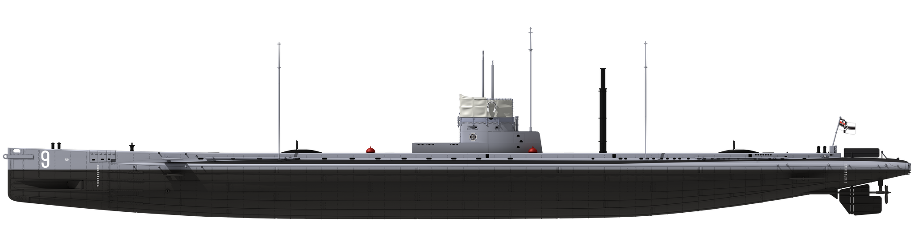
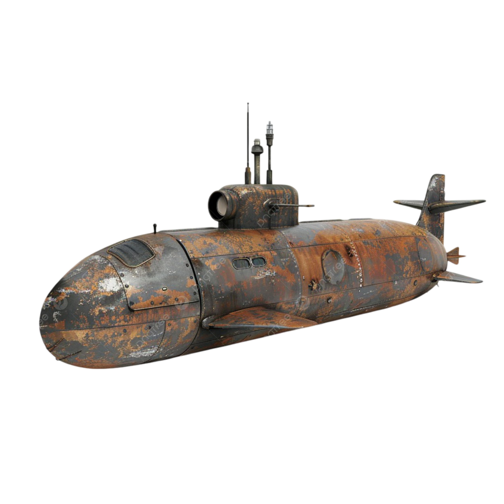
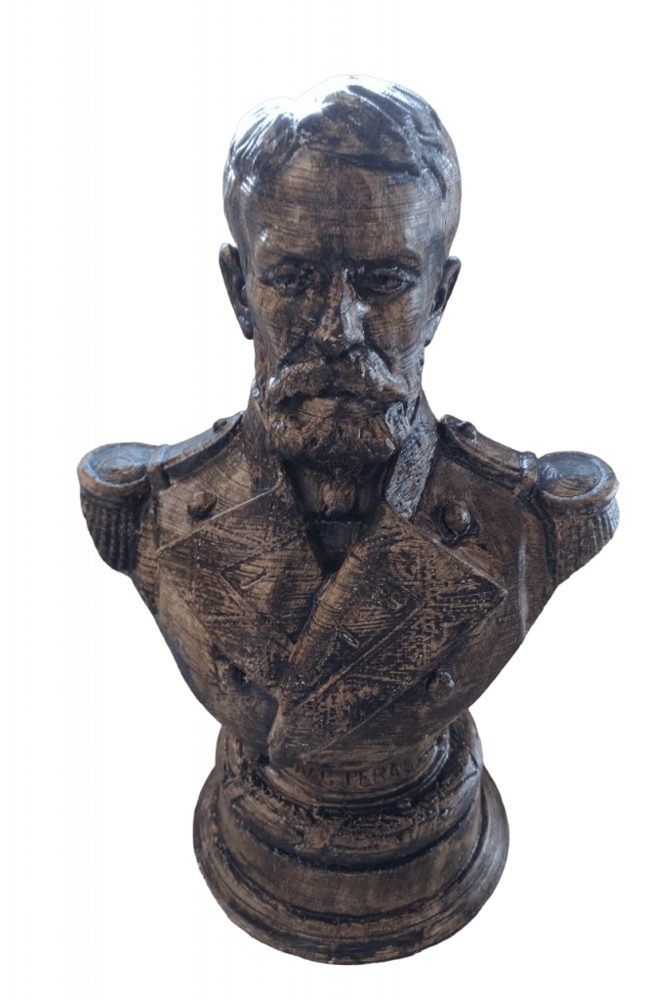
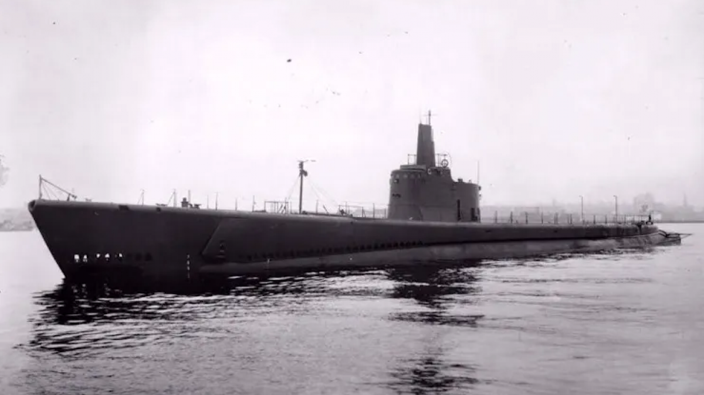
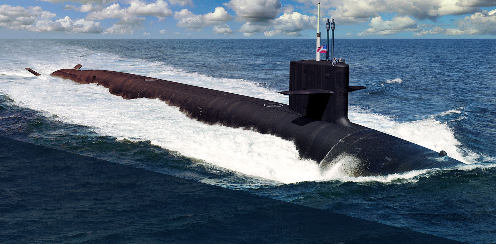

|  |
los primeros submarinos
Los submarinos tienen un origen que se remonta a siglos atrás. El concepto de embarcaciones sumergibles se menciona ya en la antigua Grecia, donde Arquímedes ideó principios fundamentales de flotabilidad
|  |
 |
|
| > |
> |
> |